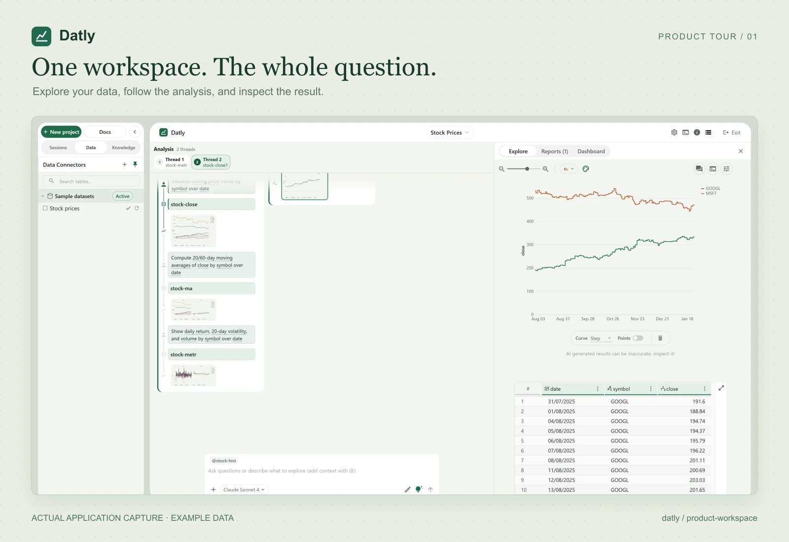
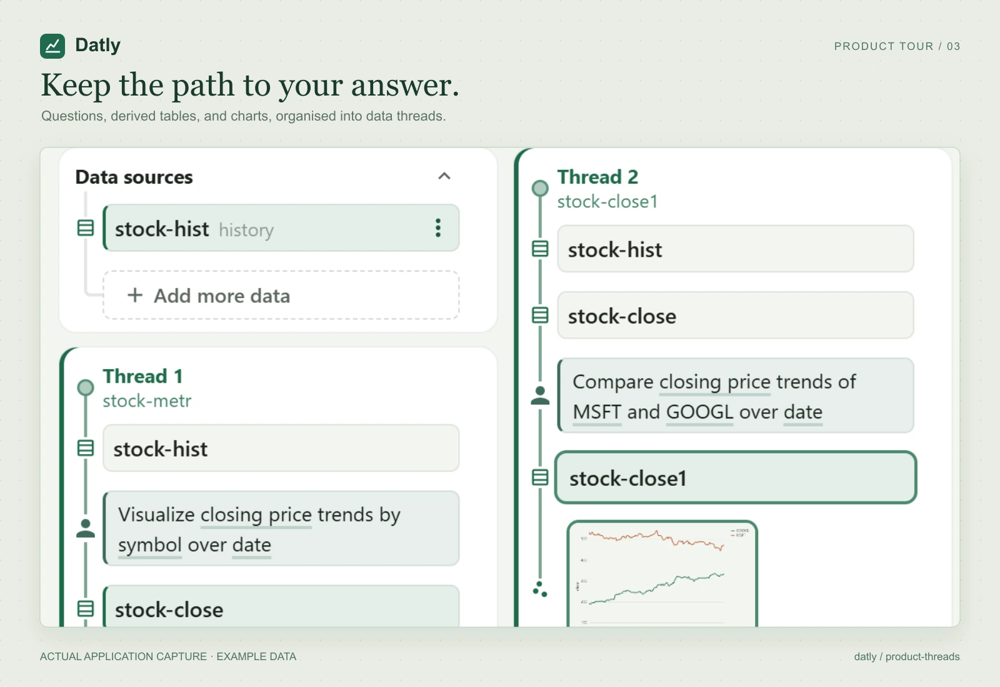
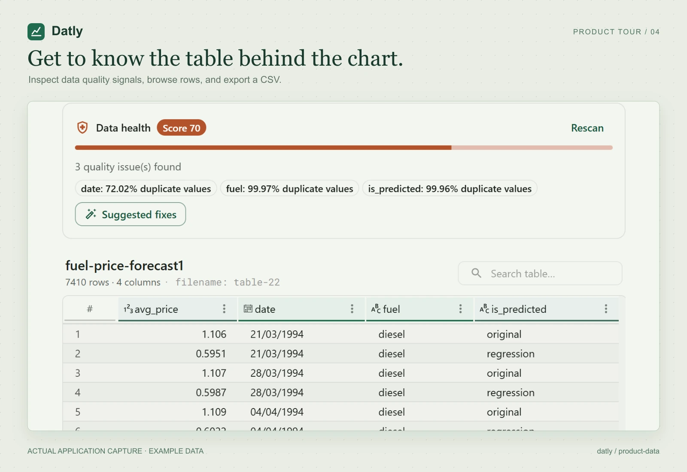
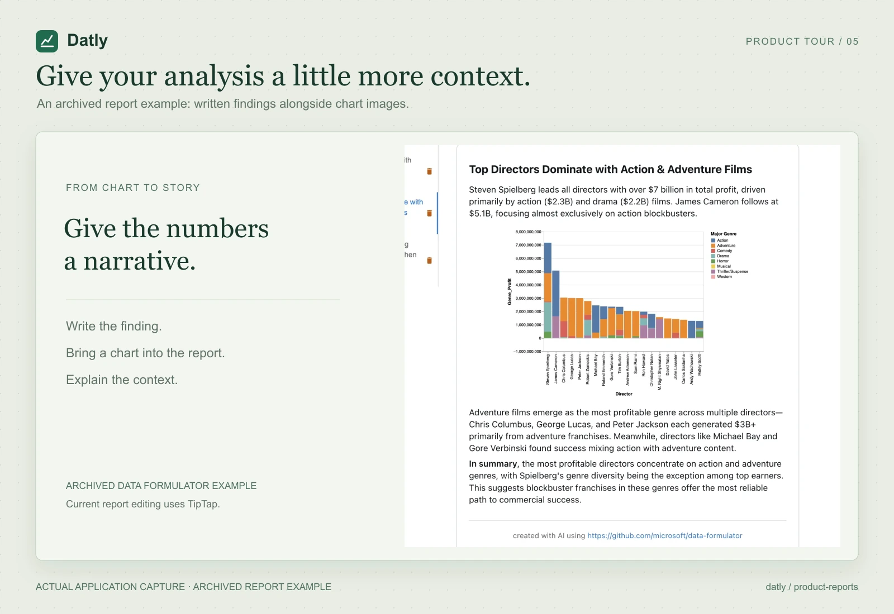

One workspace. The whole question.
Full Datly workspace using example stock data.
Download SVG ↗Download JPG ↗Download 2× PNG ↗Five product images, composed from actual application captures in the repository. The framing and crops are new; the app interface and example data are preserved. The report image is an archived example of the earlier Data Formulator interface.

Full Datly workspace using example stock data.
Download SVG ↗Download JPG ↗Download 2× PNG ↗
Two detail views from the real Explore canvas.
Download SVG ↗Download JPG ↗Download 2× PNG ↗
A focused view of questions and derived tables.
Download SVG ↗Download JPG ↗Download 2× PNG ↗
Data-quality signals and the computed rows.
Download SVG ↗Download JPG ↗Download 2× PNG ↗
Archived Data Formulator report example; current report editing uses TipTap.
Download SVG ↗Download JPG ↗Download 2× PNG ↗